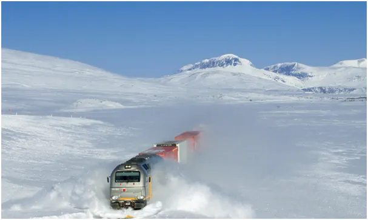
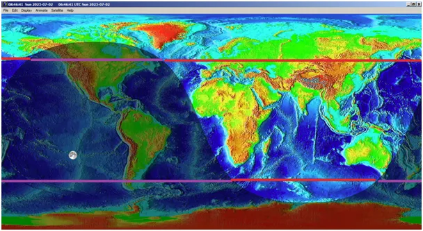
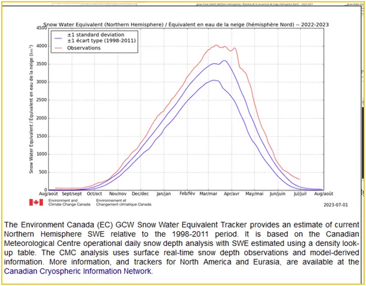
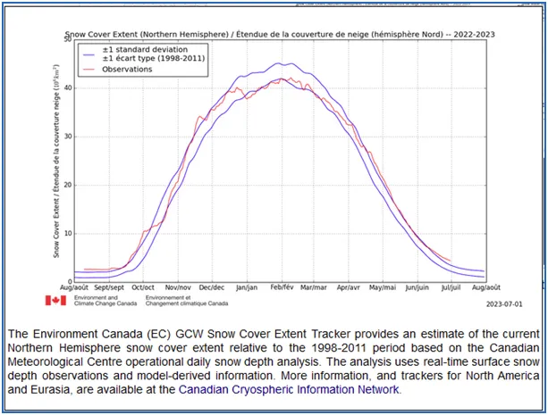
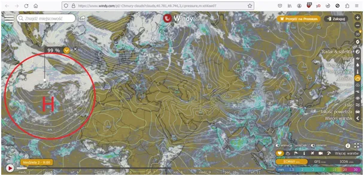

Lipiec i mamy śniegu po pachy, czyli pięćdziesiątnica meteorologiczna.
W starożytnych kronikach, w tym w Biblii, spotykamy pojęcie pięćdziesiątnicy, chodzi o okres 7 tygodni, czyli 49 dni. Zostawmy meandry przeliczania kalendarza księżycowego na nasze zwyczaje. Wiemy, że 7 tygodni trwały żniwa, które zaczynały się ok. 7 tygodni po wiosennej równonocy. Koniec tego okresu wypada na przełom kwietnia i maja. Kto był na Cyprze w kwietniu, ten widział kombajny zbierające jęczmień. Właśnie 7 tygodni trwa bezwładność termiczna Ziemi i oceanów.

Od początku lata 21 czerwca do około 9 sierpnia północna część globu nagrzewa się coraz bardziej, mimo że Słonce już się cofa od zwrotnika w kierunku równika, aby 23 września ogrzewać równo obie półkule. Za kolejne 7 tygodni, 11 listopada wejdziemy w okres zimowy, z długą nocą i zimnymi wiatrami i deszczami, czasem ze śniegiem.

Bezwładność termiczna półkuli i ciągłe podnoszenie się temperatury powietrza, wynika głównie z tego, że długi dzień oznacza nagrzewanie się oceanów i przenoszenie ciepła w kierunku biegunów przez prądy morskie. Krótka noc, to krótki okres oddawania ciepła z Ziemi w Kosmos, co widać w długości linii czerwonych i fioletowych na pierwszej mapce. W bilansie ciepła na Ziemi liczą się tylko głównie oceany oraz w mniejszym stopniu nagrzane skały, pustynie, grunt, miasta. Sahara i pustynie Ameryki Północnej mają duże znaczenie. Rozgrzany grunt oddaje do atmosfery ciepło w nocy.
Ważna Mantra Zdrowego Rozsądku (WMZR):
Słońce wysyła na Ziemię jedynie promieniowanie widzialne w całym jego tęczowym spektrum. Powietrze jest dla tego promieniowania przeźroczyste, co oznacza, że nie dochodzi do przekazywania energii słonecznej, gdy promienie Słońca przecinają wysoką na 100 km atmosferę. Słońce, nie ogrzewa powietrza! Dopiero, gdy natrafią na coś" kolorowego, a najlepiej czarnego pochłaniają część kolorowego widma, a odbijają resztę. Liść pochłania wszystko poza zielenią, dlatego odbite od niego światło postrzegamy jako kolor zielony. Ciała, które pochłaniają wszystko, my postrzegamy jako czarne. Ciała białe odbijają wszystko, dlatego śnieg nie topi się na Słońcu, gdy jest mróz.
Gdy czarna ziemia lub asfalt pochłonie to widzialne promieniowanie się nagrzewa. To jest proces, gdy widzialne promieniowanie jest wyłapywane przez atomy i energia promieniowania jest zamieniana na energię drgań atomu. Czym atom bardziej drży tym jest cieplejszy. Tu dotknęliśmy fizyki kwantowej, ale wracamy na Ziemię. Ciepłe ciało emituje promienie podczerwone i to dopiero one są przejmowane przez powietrze. Powietrze nagrzewa się tylko w ten sposób, od podczerwieni lub od styku z czymś cieplejszym od siebie. Gdy styka się z czymś zimnym np. lodem arktycznym, czy śniegiem, stygnie.
Mamy dwa bardzo ważne wykresy:

Na pierwszym widzimy aktualny ekwiwalent wody pod postacią śniegu, jaka zalega jeszcze na północy naszej półkuli. W okresie maksimum typowa wielkość to poziom po środku pomiędzy niebieskimi liniami ok. 3400 km^3 (kilometrów sześciennych). W tym roku było wyjątkowo dużo śniegu, ponad 4000 km^3 i jeszcze w kwietniu przybywało. W maju topniał dość szybko, ale w zimnym czerwcu zwolnił i w lipiec wchodzimy ze sporą górą śniegu. Kolejny wykres pokazuje nie ile tego śniegu jest tylko na jakim obszarze lądów i lodów zalega.

Z zestawienia obu wykresów wnioskujemy, że przy typowej powierzchni większa masa śniegu oznacza jego większą grubość. Oba wykresy sugerują, że w tym roku śnieg w Arktyce może przetrwać lato w istotnej ilości, co jest zjawiskiem rzadkim w obserwowanym przez ludzi ostatnim stuleciu.

Na mapce zachmurzenia widzimy dużo chmur na obszarze wyżu nad północnym Atlantykiem, co nie jest częste, wyż to zwykle błękitne niebo. Zgodnie z badaniami Henrika Svensmarka chmury są obfitsze w okresach niskiej aktywności Słońca. Właśnie wychodzimy albo jesteśmy w środku dołka wynikającego z nałożenia się dwóch cykli słonecznych: krótkiego (11 letniego) i długiego (około 107 letniego). Taki układ mieliśmy w czasie, gdy Napoleon i jego armia zamarzali w drodze z Moskwy. O ile okres wzrostu temperatury wyliczyliśmy sobie na około do 9 sierpnia to w Polsce wiemy, że "od Anki zimne wieczory i ranki", chodzi o 26 lipca. Najbliższy nów Księżyca mamy 17 lipca, oby to nie był moment odwrotu lata. Na szczęście przyszłości nie zna nikt i aby się do niej przenieść i ją w pełni poznać musimy zwyczajem fizyków kwantowych poczekać.
Paweł Klimczewski